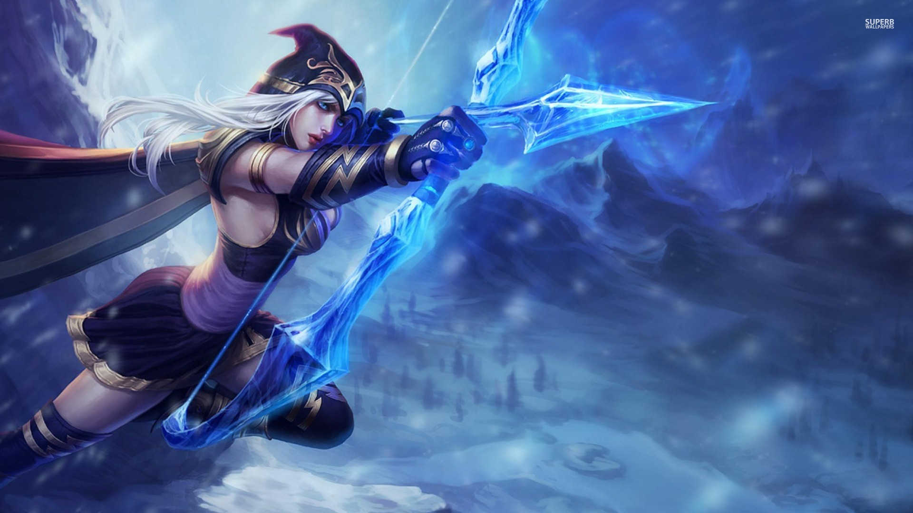
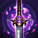

Empty ADC page

Lore
Abilities
- Frost Shot
- Ashe's basic attacks and abilities apply Frost Shot Debuff Frost to affected enemies, Slow icon slowing them by 5 / 11 / 17 / 23 / 29 / 35% for 2 seconds. Ashe cannot Critical strike icon critically strike normally, but her basic attacks against Frost Shot Debuff Frosted enemies always Critical strike icon critically strike, increasing their damage by 10% + (critical chance × (1 + bonus critical damage))%.
- Ranger's Focus
- PASSIVE: Ashe gains a stack of Focus.png Focus for 4 seconds whenever she Slow icon slows an enemy, stacking up to 5 times. Volley and Enchanted Crystal Arrow.png Enchanted Crystal Arrow only grant up to one stack per cast.
Ranger's Focus
ACTIVE: Ashe consumes her current Focus stacks, gains bonus attack speed and causes Frost Shot.png Frost Shots to Slow icon slow by an additional 20% for 4 seconds.
BONUS ATTACK SPEED: 20 / 25 / 30 / 35 / 40%
EMPOWERED ACTIVE: If Ashe has 5 stacks on activation, Ranger's Focus also causes each of her basic attacks to fire a flurry of five arrows. Each arrow deals modified physical damage that benefits from Frost Shot.png Frost Shots and life steal, and each flurry triggers on-attack effects five times but on-hit effects only once.
「 DAMAGE PER ARROW: 23 / 24 / 25 / 26 / 27% AD 」 - Arrow Volley
- ACTIVE: Ashe fires 9 arrows in a cone in the target direction, dealing physical damage to all enemies hit.
PHYSICAL DAMAGE: 20 / 35 / 50 / 65 / 80 (+ 100% AD) Enemies can intercept multiple arrows, but do not take damage from arrows beyond the first. - Hawkshot
- PASSIVE: Ashe stores a charge of Hawkshot periodically, up to a maximum of 2 stored at once.
ACTIVE: Ashe sends a hawk spirit toward the target location, granting Sight icon sight of its path for 2 seconds and in a large radius at its destination for 5 seconds. The hawk's sight is not obstructed by brush or terrain. - Enchanted Crystal arrow
- ACTIVE: Ashe fires a Enchanted Crystal Arrow Minimap missile of ice in the target direction. The arrow shatters upon hitting an enemy champion, Stun icon stunning the champion, and dealing magic damage and Slow icon slowing nearby enemies for 1-3.5 seconds, based on the distance the arrow traveled.
Enemies near the main target also take 50% damage.
「 MAGIC DAMAGE: 250 / 425 / 600 (+ 100% AP) 」
Items

Starting Item
Doransblade
(health+AD+lifesteal)
Essential
Berserker Greaves
(movementspeed+attack speed)
Essential
Infinity Edge
(AD+crit chance+200% crit DMG)
Essential
Phantom Dancer
( att speed+crit chance+movement speed)
Essential
Blood Thirster
(att DMG+life steal+overheal)
Essential
Last Whisper
(att DMG+ingores armor)

Optional
Youmuu's GhostBlade
(att DMG+crit chance+CDR+armor pen)

Optional
Blade of the ruined king
(att speed+att DMG+lifesteal)
Optional
Guardians Angel
(MAG res+armor)
Optional
Banshee's Veil
(HP+MAG res+HP regen+spell block)